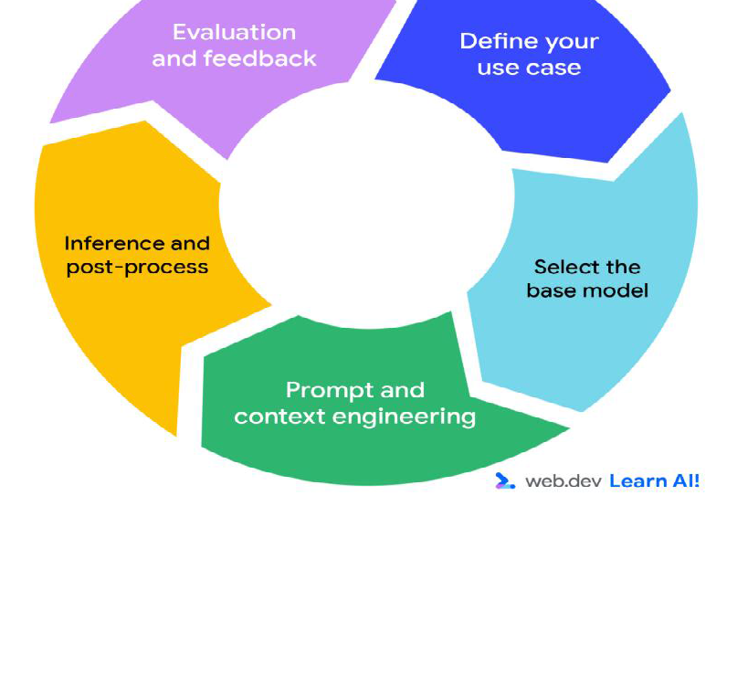
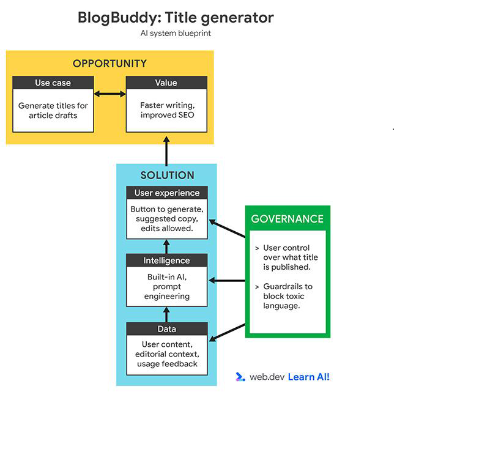

اعداد الطالبة:مريم غالى السيد غازى السقا
الرقم الجامعي:2501172
يشهد العالم في الوقت الحالي تطورًا سريعًا في تقنيات الذكاء الاصطناعي، وأصبح الذكاء الاصطناعي التوليدي من الأدوات الحديثة التي يمكن الاستفادة منها في مختلف المجالات، ومنها تطوير المواقع الإلكترونية وتطبيقات الويب. وتستطيع هذه التقنيات المساعدة في إنشاء النصوص والأكواد البرمجية، وتفسير الأخطاء، وتقديم اقتراحات تساعد المطورين على إنجاز أعمالهم بصورة أكثر تنظيمًا.
ومع انتشار أدوات مثل ChatGPT وGemini، أصبح بإمكان المبتدئين الحصول على شرح مبسط لمفاهيم البرمجة وتجربة أمثلة عملية تساعدهم على التعلم. ومع ذلك، فإن هذه الأدوات ليست بديلًا عن المعرفة التقنية؛ إذ قد تقدم أحيانًا معلومات غير دقيقة أو أكوادًا تحتاج إلى المراجعة والتعديل.
يهدف هذا التقرير إلى توضيح مفهوم الذكاء الاصطناعي التوليدي، وشرح كيفية الاستفادة منه في تطوير الويب، مع عرض أمثلة مبسطة توضح استخداماته، والتعرف على أهم فوائده وتحدياته، وبيان أهمية استخدامه بطريقة مسؤولة.
الذكاء الاصطناعي التوليدي (Generative AI) هو أحد فروع الذكاء الاصطناعي الذي يستطيع إنشاء محتوى جديد، مثل النصوص والصور والأصوات والأكواد البرمجية، اعتمادًا على الأنماط التي تعلمها من البيانات. ومن أمثلة الأدوات التي تعتمد على هذه التقنية ChatGPT وGoogle Gemini، حيث يمكن للمستخدم التفاعل معها من خلال كتابة أسئلة أو تعليمات للحصول على إجابات ومقترحات.
وفي مجال تطوير الويب، يمكن الاستفادة من هذه الأدوات في فهم لغات البرمجة، مثل HTML وCSS وJavaScript، والحصول على أمثلة تطبيقية تساعد المبتدئين على التعلم. ومع ذلك، يجب مراجعة النتائج واختبار الأكواد؛ لأن مخرجات الذكاء الاصطناعي قد تحتوي على أخطاء أو معلومات غير دقيقة.
تتعدد استخدامات الذكاء الاصطناعي التوليدي في تطوير المواقع الإلكترونية، ومن أهمها:
لنفترض أن أحد المطورين يريد إنشاء صفحة ويب بسيطة لمتجر ملابس. يمكنه الاستعانة بأداة ذكاء اصطناعي توليدي لاقتراح كود أولي باستخدام HTML وCSS.
يمكن تنفيذ ذلك من خلال الخطوات التالية:
يوضح هذا المثال أن الذكاء الاصطناعي يمكن أن يساعد في تسريع عملية التطوير، لكنه لا يُغني عن فهم المطور للكود ومراجعته واختباره.
يتطلب دمج الذكاء الاصطناعي التوليدي في تطبيقات الويب تصميمًا منظمًا يحدد دور المستخدم، وآلية عمل النموذج الذكي، والبيانات المستخدمة، وضوابط الأمان. ويساعد تقسيم النظام إلى واجهة للمستخدم، ومكونات للذكاء الاصطناعي، وآليات للتحكم والمراجعة على تنظيم عملية التطوير وتحسين موثوقية التطبيق.

يقدم الذكاء الاصطناعي التوليدي مجموعة من الفوائد لمطوري الويب، ومن أهمها:
| الاستخدام | الفائدة |
|---|---|
| شرح الأكواد البرمجية | تسهيل فهم البرمجة للمبتدئين |
| إنشاء نماذج أولية للمواقع | توفير الوقت في التصميم |
| اكتشاف الأخطاء البرمجية | المساعدة في حل المشكلات |
تمر عملية تطوير التطبيقات التي تعتمد على الذكاء الاصطناعي التوليدي بعدة مراحل مترابطة، تبدأ بتحديد حالة الاستخدام المناسبة، ثم اختيار النموذج الأساسي، وإعداد الأوامر والسياق، ومعالجة النتائج، وأخيرًا تقييم الأداء والاستفادة من التغذية الراجعة. وتتكرر هذه المراحل عند الحاجة إلى تحسين النظام، مما يساعد المطور على اكتشاف المشكلات وتطوير جودة النتائج تدريجيًا.

في الختام، يتضح أن الذكاء الاصطناعي التوليدي أصبح أداة مفيدة في مجال تطوير الويب، حيث يساعد المطورين على كتابة الأكواد، وفهم المشكلات البرمجية، وتعلم مهارات جديدة بصورة أسهل وأسرع. ومع ذلك، لا يمكن الاعتماد عليه بشكل كامل دون مراجعة نتائجه واختبارها والتأكد من صحتها.
لذلك، يُنصح باستخدام هذه الأدوات باعتبارها وسيلة مساعدة للتعلم والتطوير، مع الاهتمام بتنمية المهارات البرمجية الأساسية والالتزام بقواعد أمن المعلومات وحقوق الملكية الفكرية.